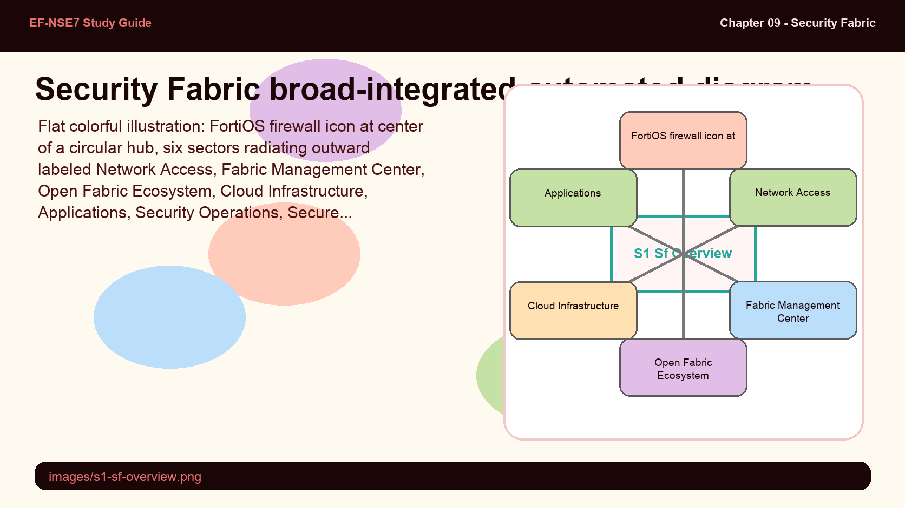
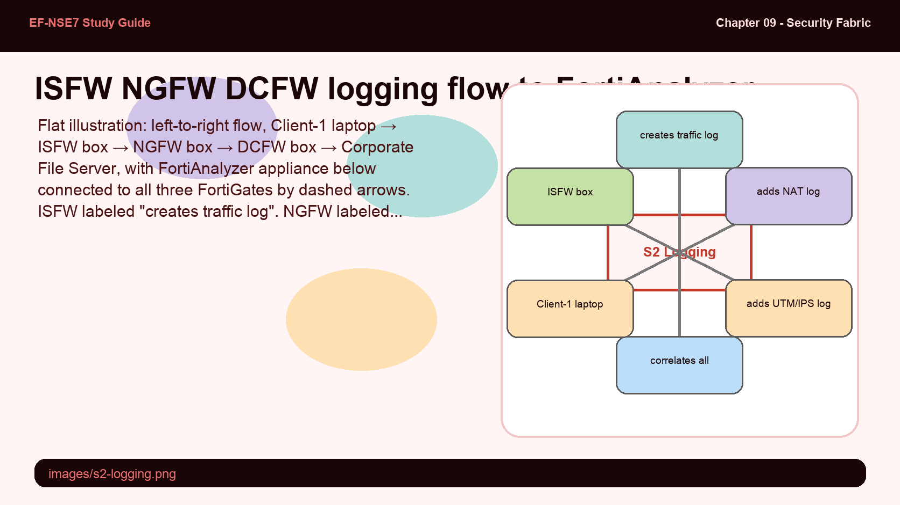
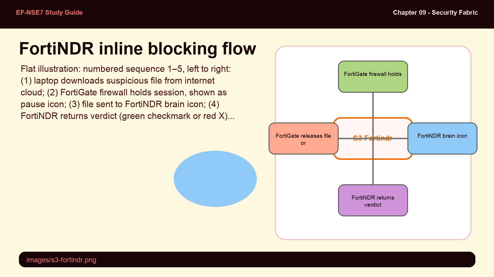
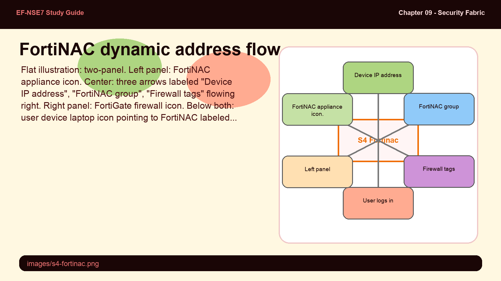
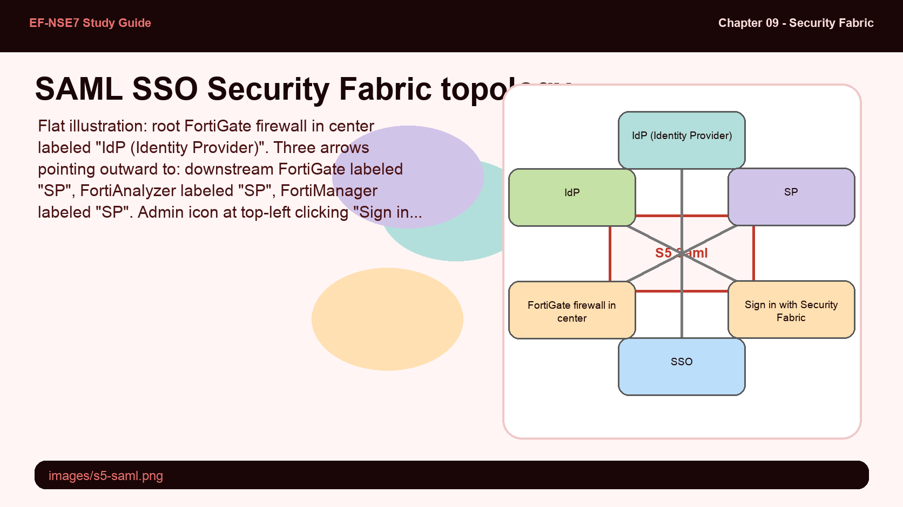
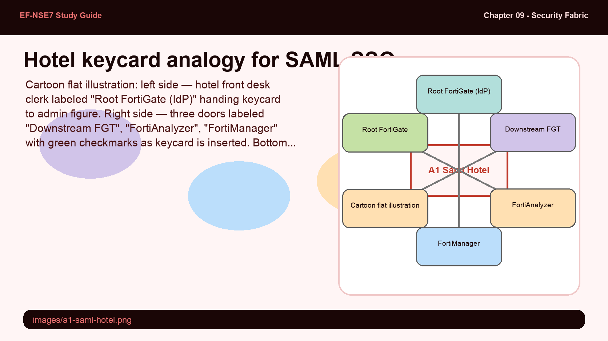

The Fortinet Security Fabric is described as broad, integrated, and automated — but those three words carry specific technical meaning. A platform being "broad" means it covers the full attack surface, not just one segment. Being "integrated" means devices share context, not just logs. Being "automated" means the system self-heals without waiting for human input.
- Why does the Security Fabric communicate through connectors instead of having every device log directly to a central manager?
- If the Security Fabric is open to third-party devices, what risk does that introduce, and how does the root FortiGate control it?
Security Fabric Overview

The Security Fabric hub — FortiOS at the center connecting network, cloud, application, and security operations domains.
The Fortinet Security Fabric is a high-performance cybersecurity mesh platform powered by FortiOS. It brings together an ecosystem of security products to provide comprehensive, real-time protection from users to applications. The Fabric is built on three foundational pillars: Broad (detect threats and enforce security everywhere), Integrated (close security gaps and reduce complexity), and Automated (enable faster time-to-prevention and efficient operations).
The automated dimension is particularly important for the exam: the Security Fabric uses AI-driven, context-aware capabilities to deliver near-real-time, user-to-application coordinated protection. Process automation frees IT teams from repetitive tasks. The Fabric is open — it allows communication between Fortinet and third-party devices through connectors, which are the primary integration mechanism.
In a Security Fabric, multiple FortiGate devices can see the same session. Without a deduplication rule, FortiAnalyzer would receive multiple logs for the same flow — making reporting unreliable and automation triggers fire incorrectly. The Fabric solves this with a "first handler logs" rule, but there are exceptions that matter for exam questions.
- Why does an upstream FortiGate that performs NAT generate an additional log even though it isn't the "first handler" for the session?
- If the root FortiGate goes offline, do leaf FortiGates stop sending logs to FortiAnalyzer? Explain why or why not.
Centralized Logging with FortiAnalyzer

Three-tier Security Fabric logging: ISFW logs first touch, NGFW adds NAT log, DCFW adds UTM log — FortiAnalyzer correlates all three.
The FortiAnalyzer Fabric connector consolidates traffic logs across the entire Security Fabric. The key rule is: the first FortiGate that handles a session logs it. Any upstream FortiGate that receives a packet from a MAC address belonging to another Fabric member does not generate a duplicate traffic log for that session.
There are two important exceptions. First, if an upstream FortiGate performs NAT, it generates an additional log to record the translated port and address information. Second, upstream FortiGates still log UTM events (like IPS signature matches) if UTM is configured on them. FortiAnalyzer performs UTM and traffic log correlation automatically — no extra configuration is required.
FortiNDR adds a second layer of malware analysis beyond traditional antivirus. When FortiGate's AV doesn't flag a file, FortiNDR gets the chance to inspect it using machine learning. The key design question is: how does FortiGate hold a user session while waiting for FortiNDR's verdict without breaking the user experience?
- In FortiNDR's inline blocking mode, what happens to the user's session while FortiNDR analyzes the file?
- Why must FortiNDR connection requests be explicitly accepted on the root FortiGate, even after the Security Fabric is already running?
Use Case — Adding FortiNDR to the Fabric

FortiNDR inline blocking: suspicious file → FortiGate holds session → FortiNDR verdict → release or terminate.
After enabling the Security Fabric on a device like FortiNDR, the device submits a connection request to the Security Fabric root FortiGate. The administrator must accept this request — it appears as a notification badge in the FortiGate GUI. Once accepted, FortiNDR is visible in both the Logical Topology and Physical Topology views.
When operating in inline blocking mode, FortiNDR intercepts files that FortiGate's standard antivirus engine does not flag. FortiGate places the user session on hold and forwards the file to FortiNDR, which applies machine learning (ML) and artificial neural network (ANN) analysis. The verdict (clean or malicious) is returned within seconds. If clean, FortiGate releases the file. If malicious, FortiGate terminates the session.
FortiNDR shares statistics with the root FortiGate dashboard via optional widgets: Detection Statistics (24 Hours) and Network Anomalies (24 Hours). For downstream FortiGate devices, files transit through the Security Fabric root FortiGate device before reaching FortiNDR.
FortiNAC knows about every device connected to the network through its integration with switches, APs, and routers. The challenge is getting that device identity information into FortiGate's policy engine in real time. The answer is dynamic firewall addresses — but there's a minimum threshold for when they become active.
- Why does FortiNAC require two user login events before the tag dynamic firewall address becomes active in FortiOS?
- Where in the FortiGate GUI would you find the FortiNAC-created dynamic firewall addresses, and how would you use them in policy?
Use Case — FortiNAC and Dynamic Firewall Addressing

FortiNAC passes device IP, group names, and firewall tags to the root FortiGate via REST API on user login.
FortiNAC communicates with infrastructure devices — wireless controllers, APs, switches, and routers — that detect connected endpoints. You add FortiNAC to the Security Fabric on the root FortiGate. When a user logs in, FortiNAC synchronizes the login information with FortiGate via the REST API, pushing three pieces of data: the device IP address, FortiNAC group names, and firewall tags.
FortiGate uses this data to update a dynamic firewall address object. This address object appears in FortiOS under Policy & Objects > Addresses in the FortiNAC Tag (IP Address) section. Two user login events must occur before these dynamic addresses become active. The firewall policies can use FortiNAC tag dynamic addresses as source or destination, enabling SSO for end users connecting through FortiNAC-managed infrastructure.
SAML SSO in the Security Fabric lets administrators move between FortiGate, FortiAnalyzer, and FortiManager without re-authenticating. The architecture has a strict role assignment: only one device can be the Identity Provider. Understanding which device plays which role — and what constraints exist — is frequently tested.
- In a Security Fabric SAML SSO configuration, which device acts as the Identity Provider (IdP) and which devices act as Service Providers (SP)?
- What is the browser session constraint on SAML SSO, and what happens if an administrator opens a different browser?
Use Case — Security Fabric with SAML SSO

Root FortiGate = IdP. Downstream FortiGates, FortiAnalyzer, FortiManager = Service Providers. One login unlocks all.
In a Security Fabric environment, you can enable SAML SSO authentication to allow administrators to access downstream FortiGate devices, FortiAnalyzer, and FortiManager without re-entering credentials for each device. The root FortiGate acts as the Identity Provider (IdP) — this is the only device that can hold this role. All other devices in the Fabric are configured as Service Providers (SP).
Once an administrator authenticates against the root FortiGate, they can move between any Fabric device without logging in again, as long as they remain within the same browser session. The top banner in the FortiGate GUI shows a list to access Security Fabric members. FortiManager and FortiAnalyzer can also register as SPs. The "Sign in with Security Fabric" option appears on the login screen of each SP device.
SAML SSO in the Security Fabric works like a hotel keycard system: the front desk (root FortiGate) issues your keycard once, and you can open any authorized room (Fabric device) without stopping at the front desk again — until you check out (end the browser session).
- Root FortiGate (IdP) — the hotel front desk that verifies identity and issues the keycard
- Downstream devices (SPs) — individual rooms that accept the keycard without calling the front desk each time
- Browser session — the duration of your hotel stay; checking out (closing the browser) revokes the keycard
